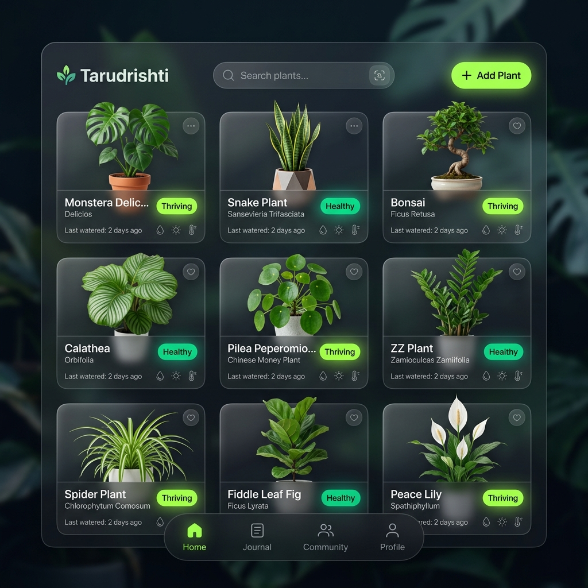
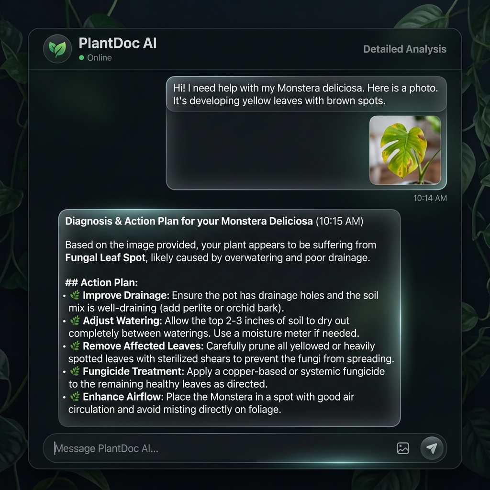

A Beginner's Guide to Understanding the Botanical AI Assistant
Imagine having a master gardener, a plant pathologist, and a diligent personal assistant available 24/7 in your pocket. That's Tarudrishti. It is a web application (specifically, a Progressive Web App or PWA) that helps you take care of your plants.
You can talk to it normally ("Hey, I watered my snake plant today"), send it pictures of sick leaves, and it will log your actions, diagnose problems, and even email you a schedule of what to do next.

Every web application is built using a combination of technologies. Here is what we used for Tarudrishti, broken down simply:
The buttons, text, and images you see and click on. React builds the interface, and Vite makes it load incredibly fast.
The "brain" of the app. It runs on a server, securely processes your requests, talks to the database, and sends data back to React.
The filing cabinet. A highly reliable system that stores all your user data, plant names, and care logs securely.
The intelligent agents. They read your text or look at your plant photos and figure out exactly what needs to be done.
Instead of having one giant AI try to do everything (and get confused), Tarudrishti uses a "multi-agent" approach. It breaks tasks down and hands them to specialists. This is managed by a tool called LangGraph.

AI can be slow and expensive. If 100 people ask "How often should I water a cactus?", we shouldn't pay the AI to answer it 100 times.
We use pgvector (a feature in our database) to store past questions and answers as "vectors" (mathematical coordinates). When you ask a new question, the system checks: "Have we answered something mathematically similar to this recently?"
When the Logger Agent reads "I gave my Monstera a cup of water today," it doesn't just reply with text. It extracts the data into a strict format called JSON, which the database understands:
{
"plant_name": "Monstera",
"action": "Watering",
"substance": "Water",
"date": "2026-05-12"
}This ensures our app actually functions like a tool, not just a chatbot.
If you look at the files in this project, it's divided into two main folders. Here is what they do:
src/ Folder (Frontend)This is the React code. It runs in the user's web browser.
PlantCard.jsx
is the visual card showing a plant, and AIChatSheet.jsx handles the chatting interface.
backend/ Folder (Backend)This is the Python (FastAPI) code. It runs on a server.
main.py: The main entry point. It sets up the server and the API routes
(URLs the frontend can call).graph.py: The most complex part! This is where LangGraph is set up,
defining the Router, Logger, and Diagnostician agents.models.py: Defines the Database tables (Users, Plants, CareLogs) using a
tool called SQLAlchemy.Want to dive deeper into these technologies? Here are some excellent beginner-friendly resources:
Built for Tarudrishti 🌱